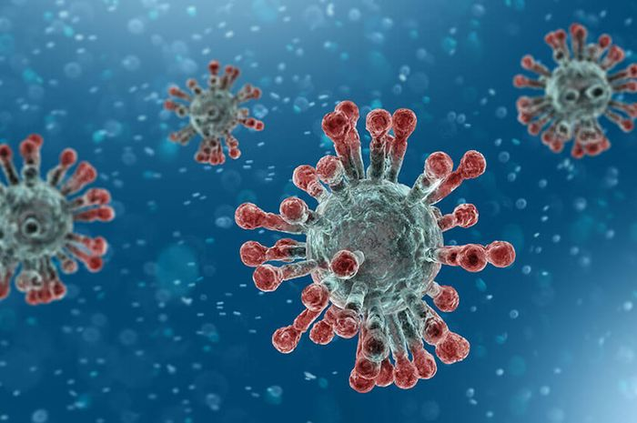
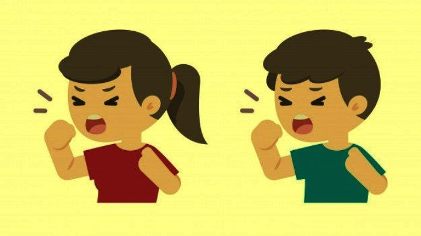
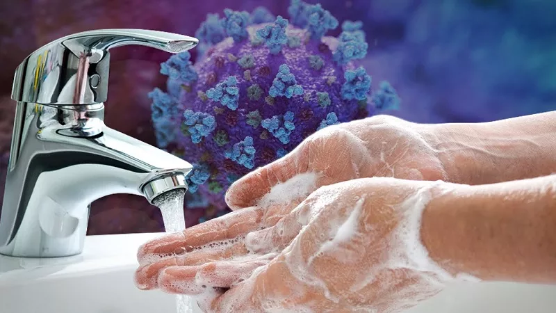
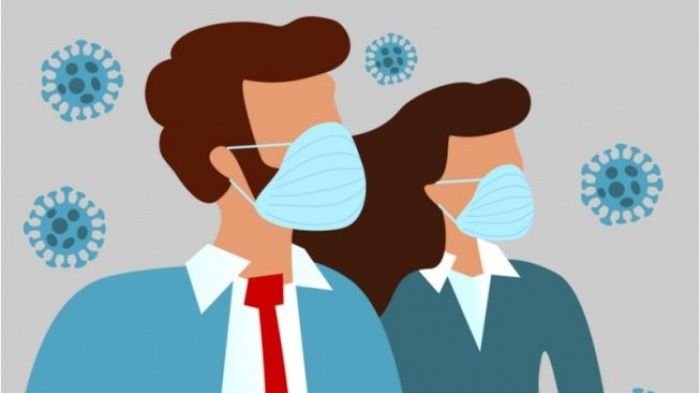

Coronavirus

Coronavirus atau virus corona merupakan keluarga besar virus yang menyebabkan infeksi saluran pernapasan atas ringan hingga sedang, seperti penyakit flu. Banyak orang terinfeksi virus ini, setidaknya satu kali dalam hidupnya.
Namun, beberapa jenis virus corona juga bisa menimbulkan penyakit yang lebih serius, seperti:
- Middle East Respiratory Syndrome (MERS-CoV).
- Severe Acute Respiratory Syndrome (SARS-CoV).
- Pneumonia.
SARS yang muncul pada November 2002 di Tiongkok, menyebar ke beberapa negara lain. Mulai dari Hongkong, Vietnam, Singapura, Indonesia, Malaysia, Inggris, Italia, Swedia, Swiss, Rusia, hingga Amerika Serikat. Epidemi SARS yang berakhir hingga pertengahan 2003 itu menjangkiti 8.098 orang di berbagai negara. Setidaknya 774 orang mesti kehilangan nyawa akibat penyakit infeksi saluran pernapasan berat tersebut.
COVID-19 atau dikenal juga dengan Novel Coronavirus (menyebabkan wabah pneumonia di kota Wuhan, Tiongkok pada Desember 2019, dan menyebar ke negara lainnya mulai Januari 2020. Indonesia sendiri mengumumkan adanya kasus covid 19 dari Maret 2020
Gejala

Virus corona bisa menimbulkan beragam gejala pada pengidapnya. Gejala yang muncul ini bergantung pada jenis virus corona yang menyerang, dan seberapa serius infeksi yang terjadi. Berikut beberapa gejala virus corona yang terbilang ringan:
Hidung beringus.
- Sakit kepala.
- Batuk.
- Sakit tenggorokan.
- Demam.
- Merasa tidak enak badan.
Hal yang perlu ditegaskan, beberapa virus corona dapat menyebabkan gejala yang parah. Infeksinya dapat berubah menjadi bronkitis dan pneumonia (disebabkan oleh COVID-19), yang mengakibatkan gejala seperti:
- Demam yang mungkin cukup tinggi bila pasien mengidap pneumonia.
- Batuk dengan lendir.
- Sesak napas.
- Nyeri dada atau sesak saat bernapas dan batuk.
Infeksi bisa semakin parah bila menyerang kelompok individu tertentu. Contohnya, orang dengan penyakit jantung atau paru-paru, orang dengan sistem kekebalan yang lemah, bayi, dan lansia.
Pencegahan
Sampai saat ini belum ada vaksin untuk mencegah infeksi virus corona. Namun, setidaknya ada beberapa cara yang bisa dilakukan untuk mengurangi risiko terjangkit virus ini. Berikut upaya yang bisa dilakukan:
1. Dengan Cuci Tangan

Bagaimana mencuci tangan yang benar? Yang pertama dan wajib adalah mencuci tangan dengan sabun dan air mengalir. Pastikan juga Anda mencuci tangan minimal 20 detik. Anda juga dilarang menyentuh hidung, mulut, dan mata sebelum mencuci tangan. Langkah-Langkah Mencuci Tangan
- Ratakan sabun dengan kedua telapak tangan.
- Gosok punggung dan sela-sela jari tangan kiri dengan tangan kanan dan sebaliknya.
- Gosok telapak tangan dan sela-sela jari
- Punggung jari tangan kanan digosokkan pada telapak tangan kiri dengan jari sisi dalam kedua tangan saling mengunci.
- Ibu jari tangan kiri digosok berputar dalam genggaman tangan kanan dan sebaliknya.
- Gosok berputar ujung jari tangan kanan di telapak taangan kiri dan sebaliknya.
2. Mengunakan Masker

Berikut ini cara memakai masker medis untuk melindungi diri dari Virus Corona COVID-19:
- Sebelum mengenakan masker, bersihkan tangan dengan alkohol atau sabun dan air.
- Kenakan masker jika Anda batuk atau bersin.
- Tutupi mulut dan hidung dengan masker dan pastikan tidak ada celah antara wajah dan masker Anda.
- Hindari menyentuh masker saat menggunakannya; jika Anda melakukannya, bersihkan tangan Anda dengan alkohol atau sabun dan air.
- Ganti masker dengan yang baru segera setelah lembab dan jangan gunakan kembali masker sekali pakai.
- Masker hanya efektif bila digunakan bersama dengan pembersihan tangan yang sering, dilakukan dengan alkohol atau sabun dan air.